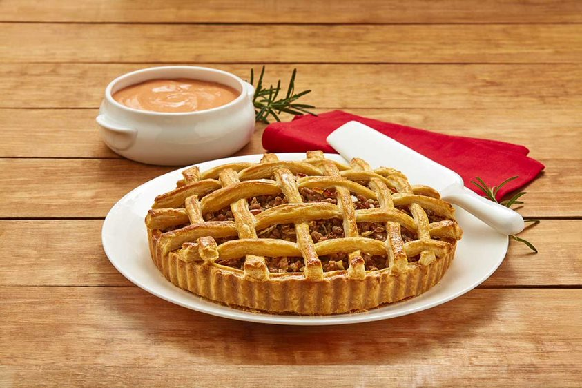

Receta de Pay
El pay es un postre delicioso y versátil que se puede hacer con una variedad de rellenos, desde frutas hasta chocolate. A continuación, te presentamos una receta básica para hacer un pay de manzana clásico.

Ingredientes
- 2 tazas de manzanas peladas, desinfectadas y picadas en rodajas finas
- 1/2 taza de azúcar granulada
- 1 cucharadita de canela en polvo
- 1/4 de cucharadita de nuez moscada
- 1 cucharada de jugo de limón
- 1 masa para pay (puede ser comprada o hecha en casa)
- 2 cucharadas de mantequilla
- 1 huevo batido para el dorado
Instrucciones
- En un tazón grande, mezcla las manzanas picadas, el azúcar, la canela, la nuez moscada y el jugo de limón.
- Extiende la masa para pay en un molde para tarta y recorta el exceso de masa en los bordes.
- Rellena la masa con la mezcla de manzanas y coloca pequeños trozos de mantequilla sobre las manzanas.
- Coloca la segunda masa sobre el relleno y sella los bordes con un tenedor.
- Corta pequeñas aberturas en la parte superior de la masa para permitir que el vapor escape.
- Con un pincel, unta el huevo batido sobre la parte superior de la masa para darle un dorado atractivo.
- Hornea el pay en un horno precalentado a 180°C durante aproximadamente 45-50 minutos, o hasta que la masa esté dorada y las manzanas estén tiernas.
- Deja enfriar antes de servir. ¡Disfruta de tu delicioso pay de manzana!
Esta es una receta básica de pay de manzana, pero puedes experimentar con diferentes rellenos y variaciones según tus gustos personales. ¡El pay es un postre clásico que siempre es bienvenido en cualquier ocasión!